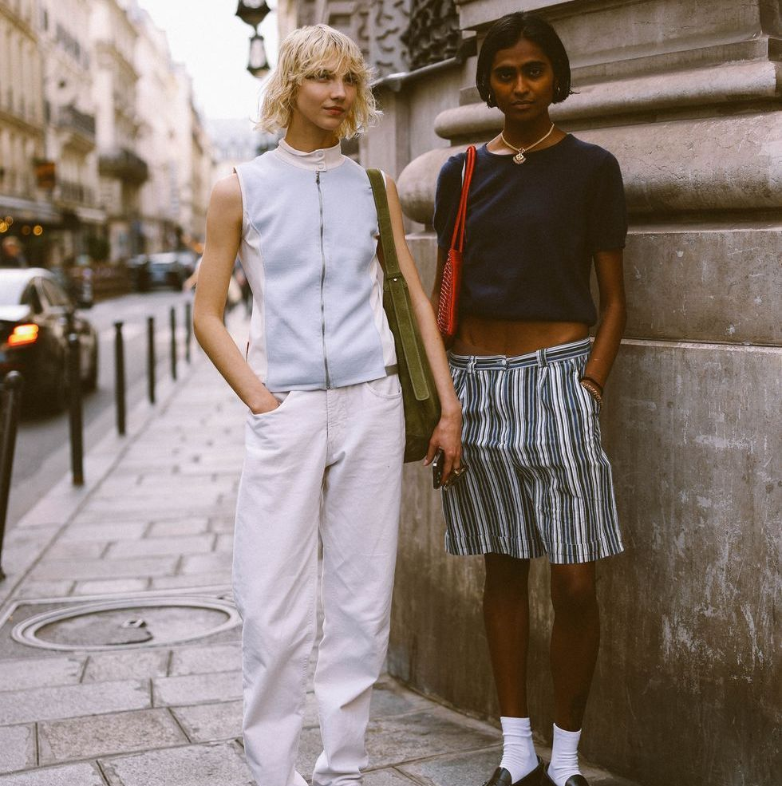
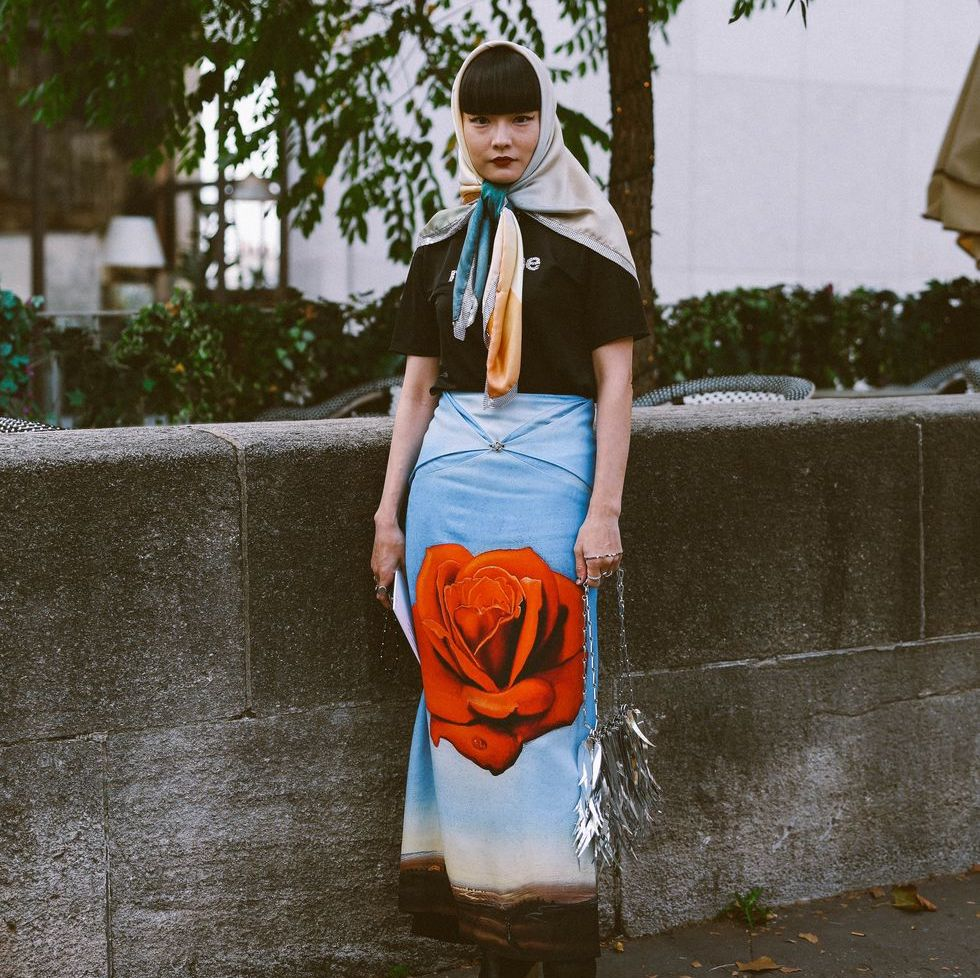
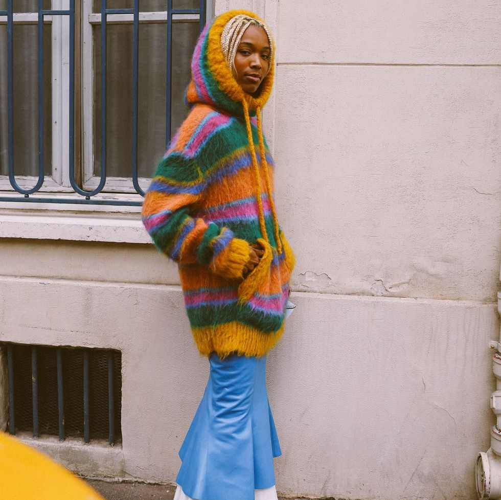
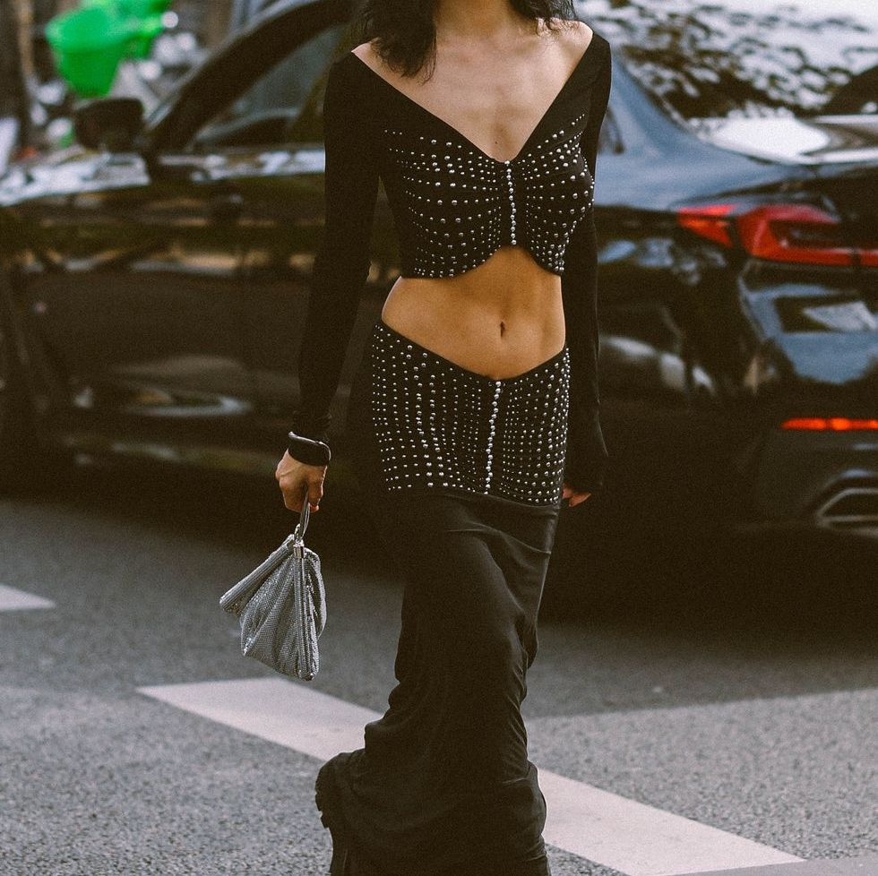

PARIS
For aspiring models captivated by the allure of Paris, getting involved in the city's modeling scene is an exciting journey that often begins with connecting with reputable agencies. IMG Paris, Elite Model Management, and Viva Model Management are key players that not only scout but also nurture talent. Prospective models can submit their portfolios and attend open calls hosted by these agencies. Engaging in local fashion events and networking within the city's vibrant fashion circles can also open doors. Keep an eye on the schedule for Paris Fashion Week, a pinnacle event where designers, agencies, and models converge, providing an excellent opportunity for aspiring talents to immerse themselves in the dynamic Parisian modeling culture. The key is to embrace the city's unique blend of timeless elegance and avant-garde innovation.



